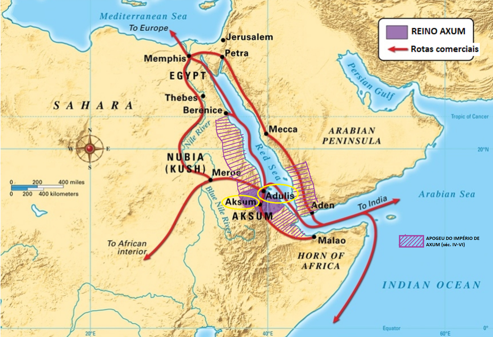
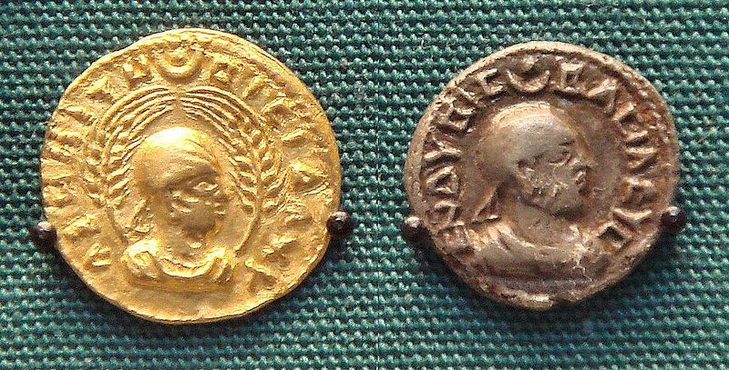
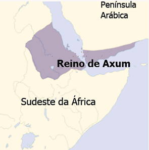
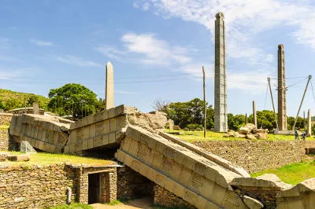
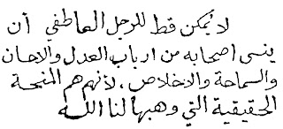
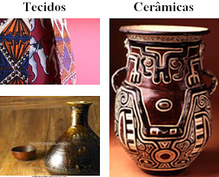
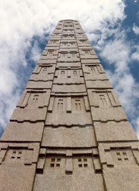

Povo Axum
História
A história do reino Axum está relacionada com as civilizações que se desenvolveram abaixo da região do Egito.

Os vestigios do reino datam do século V a.c, mas seu auge foi durante os séculos III e IV d.c, quando o Império começou a se expandir para a Etiópia, reino Kush e sul da península Árabica, ganhando muitas terras sendo extremamente importantes para agricultura, tornando-se uma das maiores potencias da época.
Econômia
A base da econômia era a agricultura e pastagem de bovinos. Devido a grande extenção territorial, conquistada em guerras, dominavam rotas de comércio que passavam pela península Arábica, Arábia meridional e pelo Mar Vermelho, sendo as principais da época, porém, outro fator importante para seu crescimento econômico foi o fato de ter uma ligação com o mar vermelho, possibilitando comércio com outras áreas como Europa e Ásia. Outro produto de destaque era o Marfim, produto de grande valor e luxo, comercializado principalmente pelos Romanos, o que levava a intensa caça de elefantes.

Mantinha relações comerciais com a Índia e China e diante do forte comércio, durante o século III, desenvolveu sua própria moeda, sendo o primeiro estado da África a cunhar uma moeda.
Localização
O reino Axum se localizava no nordeste da África, onde hoje se localiza a Etiópia, ao lado da península Árabica, do reino Kush, do Mar Vermelho e próximo ao nilo, sendo sua capital, Aksum.

Religião

No começo a religião era o politeísmo Árabe, até o século III, ao final do século IV, o judaismo e depois disso a religião dominante passou a ser o Cristianismo, durante o reinado de Ezana. Por causa disso, toda a região da Etiópia e grande parte da Núbia receberam grandes influências Cristãs.

Um ponto importante do Cristianismo no império Axum foi a construção de 11 igrejas esculpidas no solo. várias outras construções do reino de Axum são notáveis, tais como obelisco, imensas torres de pedra, tumbas e outros templos na época anterior à conversão ao cristianismo.
Cultura
A cultura Axumita era bastante influenciada pelos gregos por causa de suas relações, e isso se tornava perceptível em seu meio cultural, como exemplo a chunagem de sua moeda com a imagem dos soberanos de um lado e do outro com imagens da conversão ao cristianismo e grafadas em alfabeto grego.

Seu antigo alfabeto pertencia ao tipo sul-Árabico, porém a escrita axumita diferia dele, apesar de ser sua derivada, passou de arcáica para sofisticada e a escrita era da direita para esquerda, as palavras também começaram a ser escritas separadas.

Sua herança social e cultural é presente em pinturas rupestres no norte da Eritréia. Por serem um povo que dependia do comércio, tinham que saber lidar com artesanato e manufauras.

Outra coisa muito importante na cultura Axum eram as construções principalmente religiosas. Essas obras gigantescas são um legado cultural e um documento histórico desse povo.
Política